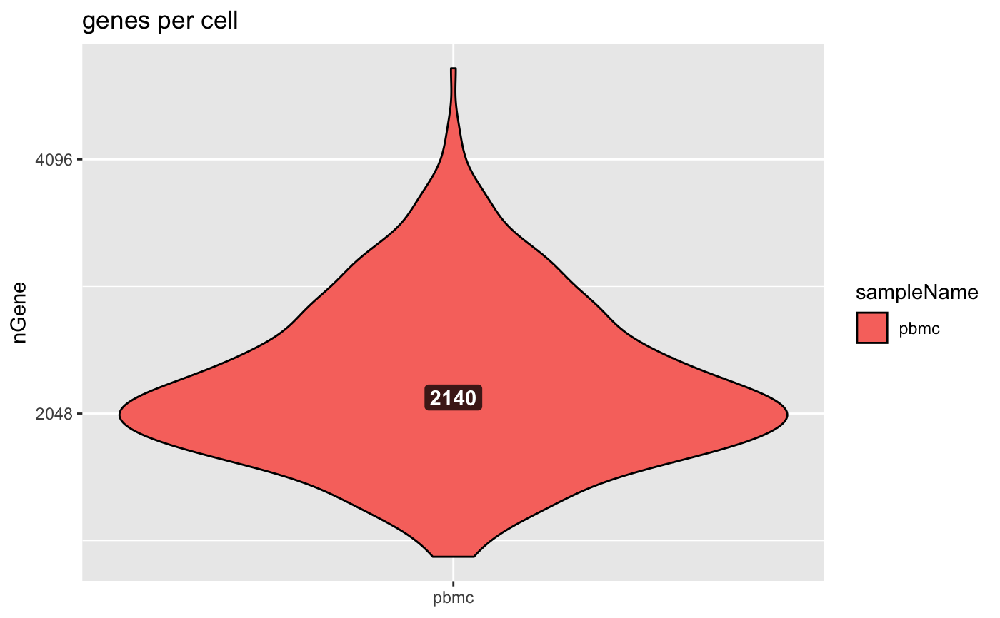

Plot Genes per Cell
Plot Genes per Cell
plotGenesPerCell(object, ...) # S4 method for bcbioSingleCell plotGenesPerCell(object, geom = "violin", min, max, interestingGroups, samplesOnYAxis = TRUE, fill = scale_fill_viridis(discrete = TRUE)) # S4 method for data.frame plotGenesPerCell(object, geom = "violin", min = 0, max = Inf, interestingGroups, samplesOnYAxis = TRUE, fill = scale_fill_viridis(discrete = TRUE)) # S4 method for seurat plotGenesPerCell(object, geom = "violin", min, max, interestingGroups, samplesOnYAxis = TRUE, fill = scale_fill_viridis(discrete = TRUE))
Arguments
| object | Object. |
|---|---|
| ... | Additional arguments (for the S4 generic definition). |
| geom | Plot type. Supported formats: |
| min | Recommended minimum value cutoff. |
| max | Recommended maximum value cutoff. |
| interestingGroups | Interesting group, to use for colors. |
| samplesOnYAxis | Plot the samples on the y axis. Doesn't apply to histogram. |
| fill | Desired ggplot fill scale. Defaults to
|
Value
Details
A violin plot is a comact display of a continuous distribution. It
is a blend of geom_boxplot() and geom_density(): a violin plot is a
mirrored density plot displayed in the same way as a boxplot.
See also
Other Quality Control Metrics: metrics,
plotCellCounts,
plotMitoRatio,
plotMitoVsCoding,
plotNovelty,
plotReadsPerCell,
plotUMIsPerCell,
plotUMIsVsGenes,
plotZerosVsDepth
Examples
load(system.file( file.path("extdata", "bcb.rda"), package = "bcbioSingleCell")) load(system.file( file.path("extdata", "seurat.rda"), package = "bcbioSingleCell")) # bcbioSingleCell plotGenesPerCell(bcb)# seurat plotGenesPerCell(seurat)